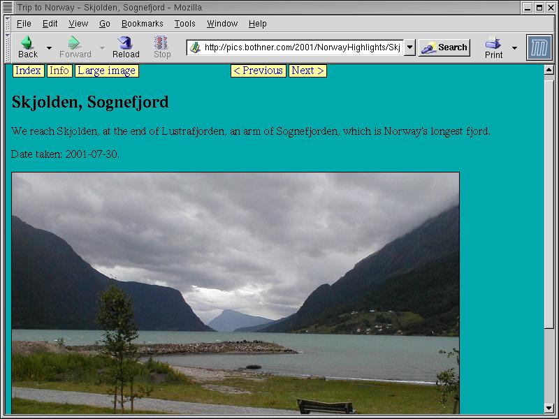

Material from this article will appear in the book XQuery: Rapid Working Knowledge, ISBN: 0-672-32479-2, to be published by Sams publishing in late 2002. If you find a mistake, or something is unclear, please email per@bothner.com so I can fix the text.
Most people think of XQuery as a query language for processing XML "data-bases". But it is also a very nice language for generating XML and HTML, including web pages. In this article we will look at XQuery from this angle.
There are many tools for generating web pages. Many of these are based on templates: You write an HTML page, but you can embed within it expressions that get calculated by the web server. Here are some popular examples:
JSP or "Java Server Pages" (http://java.sun.com/products/jsp/) is a format where Java expressions and commands are embedded in HTML pages. A JSP page is
automatically translated into a special kind of Java class, a servlet. A web server can be configured to execute the servlet when receiving Web requests.
Sample: <p>3*4 is: <%= 3*4%>.</p>
PHP (http://www.php.net/) is a relatively new scripting language that is especially popular for server applications.
Sample: <p>3*4 is: <?php echo 3*4 ?>.</p>
ASP (or "Active Server Pages") from Microsoft supports embedded interpreted VBScript and JScript code; ASP.NET (http://www.asp.net) supports other compiled
.NET languages.
Sample: <p>3*4 is: <%= 3*4>.</p>
BRL or "The Beautiful Report Language"(http://brl.sourceforge.net/) allows expressions in the Scheme language to be embedded inside templates. BRL is similar to
JSP in that it generates Java servlets.
Sample: <p>3*4 is: [(+ 3 4)].</p>
You can do the same thing with XQuery:
<p>3*4 is: {3*4}.</p>
There is one important difference between XQuery and most template systems: In the former you can nest expressions in some programming language inside HTML. With XQuery you can also nest HTML inside expressions. For example, this loop:
for $i in (1 to 10) return
<p>{$i}*4 is: {$i+4}</p>
With XQuery, you can also define functions that return HTML fragments, and you can pass those fragments though to other functions. With most template systems, you can only create output fragments as strings, and pass them around as strings.
As an example of how to generate Web pages using XQuery we will show a photo album application. There are lots of such applications around, and while they differ in features, they all have the same basic idea: You throw a bunch of digital images (JPEG files) at it, and it generates a bunch of web pages. The overview page shows many smaller "thumbnail" images; if you click on one, you get a bigger version of that image.
There are two basic approaches to doing this:
A program that generates all the web pages in advance. This is nice, because you can use a browser to view the pages on your local disk using a file: URL, even if you aren't
running a server. You can even burn the web pages onto a CD-ROM and browse the pages from there. Also, you may have an ISP that allows you to put up web pages, but running server scripts may be an
extra-cost option.
A module or script added to a web server that generates the web pages when requested by a browser. This saves disk space for the HTML files, though that is trivial compared to the disk space for the JPEG images. More valuable is that the server can present the viewer with multiple styles and preferences. This is most valuable if the server re-sizes the JPEG images as suitable for the viewer.
We will show how you can use XQuery for either approach, starting out with how to generate static web pages in advance.
For each album, we have an XML file that contains a list of JPEG image files, with some information about each picture. This XML file can be generated using a script that scans the JPEG files in a directory, or it can be edited by a text editor. I use a combination of scripts and manual editing, but that's not relevant to our goal of learning and using XQuery.
This sample index.xml file describes six digital pictures from a car trip to the West Coast of Norway in the Summer of 2001. Each photograph is described by a
<picture> element. Each picture may be available in three resolutions:
The <full-image> element gives the name (and size in pixels) of the original full-size image.
The <image> element gives the name and size of the image scaled suitably for viewing in a web page by itself when browsing.
The <small-image> element gives the name and size of a thumbnail image.
Listing 1 shows a sample index.xml file (abbreviated).
Listing 1 - An index.xml file describing some pictures
<group> <title>Trip to Norway</title> <text>July 28-30, 2001 Nathan, Per, and John took a quick round trip to the Norwegian fjord country. Here are some highlights.</text> <picture id="Lillehammer22"> <caption>Lillehammer: Ski-jump practice</caption> <date>2001-07-28</date> <text>The Lillehammer olympic 90m ski-jumping hill is used for Summer practice. You can see a jumper landing.</text> <full-image width="1280" height="960">Lillehammer22.jpg</full-image> <image width="740" height="555">Lillehammer22p.jpg</image> <small-image width="240" height="180">Lillehammer22t.jpg</small-image> </picture> <picture id="WedingCabinHike1"> <caption>Hike with family</caption> <date>2001-07-28</date> <text>We stayed at the cabin of Agnes (Per's cousin "Mimmi") and Kjell Weding at Gålå near Ringebu, and we went for an evening hike with them.</text> <full-image width="1280" height="960">WedingCabinHike1.jpg</full-image> <image width="740" height="555">WedingCabinHike1p.jpg</image> <small-image width="240" height="180">WedingCabinHike1t.jpg</small-image> </picture> <!-- more picture elements as desired --> <picture id="ViaValdres2"> <caption>Valdres valley</caption> <full-image width="1280" height="960">ViaValdres2.jpg</full-image> <image width="740" height="555">ViaValdres2p.jpg</image> <small-image width="240" height="180">ViaValdres2t.jpg</small-image> </picture> </group>
Our first task is to generate the overview page. We want at most three thumbnails per line, producing something as shown in Figure 1.

Figure 1: The overview page shows clickable thumbnails of pictures.
This is a nice example that illustrates the kind of non-trivial re-arranging that would be difficult to do with a template system or with XSLT, and tedious to do with a language like Java.
Here is the "main program" to generate the overview page:
let $group := document("index.xml")/group
return
make-group-page($group)
This is simple enough: We call the document function to read the index.xml file. This returns the document root, so we do /group to select the top-level
group node, which we pass to the make-group-page function, which does the actual work of creating the web page:
define function make-group-page($group) {
<html><head>
<title>{children($group/title)}</title>
<style type="text/css">
a.textual {{ text-decoration: none }}
img {{ border: 0 }}
</style>
</head>
<body bgcolor="#00AAAA">
<h2>{children($group/title)}</h2>
{make-row(0, $group/picture)}
</body></html>
}
The value returned by a call to make-group-page is calculated by an element constructor expression, which looks like normal XML data, except you can use
{curly braces} to embed XQuery expressions. For example both the <title> and <h2> HTML elements contain XQuery expressions
that select the <title> child of the $group parameter, and then select the children (usually a text node) of that <title> child. Note that {{double curly
braces}} are used for curly braces that should appear as-is in the <style> element.
Things start to get interesting when we get to the call to make-row. This is a recursive helper used to divide a sequence of <picture> elements into rows of at most
three. It's quite straightforward if you're comfortable with recursive functions. (If you're not comfortable using recursion, it may seem mysterious - but it does work.) The $pictures
parameter is a sequence of the <picture> elements we haven't dealt with yet. If the list is empty, we return nothing (i.e. the empty sequence ()). If there are 3 or fewer
pictures, we pass them to the format-row function, which makes a single row of thumbnail pictures. If there are exactly 4 pictures total, we take the first two pictures, and pass them the
format-row function, which puts 2 thumbnail pictures in one row, and then we do the same with the remaining 2 pictures. Otherwise, there are more than 3 pictures, so we take the first 3
pictures, put them in a row using format-row, then we take the rest of the pictures (starting at picture 4), and recursively call make-row. This processes the rest of the pictures in
the same way, putting 3 pictures in a row each time, until we come to the end.
This is the make-row function:
{-- Process a sequence of <picture> elements, grouping them into
-- rows of at most 3, for the thumbnail page.
-- $prev: An integer giving the number of <pictures> previously processed
-- in this current sequence.
-- $pictures: Remaining <picture> elements to processes.
-- Returns a <table> (as created by format-row) for group of at most 3.
--}
define function make-row($prev, $pictures) {
let $count := count($pictures) return
if ($count = 0) then ()
else if ($count < 3) then
format-row($pictures)
{-- A special case: If there are 4 pictures in a row, then group them
-- as 2 rows of 2 rather than 3 + 1. --}
else if ($count = 4 and $prev = 0) then
(format-row(sublist($pictures, 1,2)),
format-row(sublist($pictures, 3,2)))
else
(format-row(sublist($pictures, 1,3)),
make-row($prev+3,sublist($pictures,4)))
}
The format-row function loops over a sequence of <picture> elements, and calls make-thumbnail on each one. If the <picture>has a
<caption> child, it is placed underneath the thumbnail. We wrap each thumbnail+caption inside an <a> HTML link wrapped in side an HTML <table>, finally wrapping
the entire row in another HTML <table>.
define function format-row($row) {
{-- emit a newline for readability --} "
",<table width="90%"><tr>{
for $pic in $row return
<td>
<table bgcolor="black" cellpadding="0" frame="border"
border="0" rules="none" vspace="10">
<tr>
<td align="center"><a href="{$pic/@id}.html">{
make-thumbnail($pic)}</a></td>
</tr>
{ if ($pic/caption) then
<tr>
<td bgcolor="#FFFF99" align="center"><a class="textual"
href="{$pic/@id}.html">{children($pic/caption)}</a></td>
</tr>
else ()}
</table>
</td>
}</tr></table>
}
Finally, make-thumbnail looks for a <small-image> child that contains the actual name of the JPEG file, and calls make-img to emit the <img>
image link. If there is no <small-image>, we look for a <image> or a <full-image> element, and scale that instead.
define function make-thumbnail($pic) {
if ($pic/small-image) then
make-img($pic/small-image, 1.0)
else if ($pic/image) then
make-img($pic/small-image, 0.5)
else if ($pic/full-image) then
make-img($pic/full-image, 0.2)
else
( "(missing small-image)", string($pic), ")" )
}
define function make-img($picture, $scale) {
<img border="1" src="{$picture}" width="{number($picture/@width) * $scale}"
height="{number($picture/@height) * $scale}" />
}
The code so far ignores any children of the top-level <group> except for <picture>. However, if you look at the original index.xml example, you'll see
that the <group> has a <text> child. We'd like to place any such <text> contents in the appropriate place on the overview page. Another sometimes useful feature
is to be able to explicitly specify how the pictures are to be organized into rows, rather than depend on the default maximum-three-per-row. You can do that by putting a <row> element
around one or more <picture> elements to specify that these should go in a row by themselves:
define function make-group-page($group) {
<html><head>
... rest as before ..
<h2>{children($group/title)}</h2>
</body></html>
}
{-- Process the children of a <group>, grouping thumbnails into rows.
-- $pictures: A sequence of consecutive seen <picture> elements.
-- $unseen: sequence of remaining children we have not processed yet.
--}
define function find-rows($pictures, $unseen) {
if (empty($unseen)) then make-row(0, $pictures)
else
let $next := item-at($unseen, 1),
$rest := sublist($unseen, 2)
return
typeswitch ($next)
case element row return
(make-row(0, $pictures),format-row($next/*),find-rows((), $rest))
case element date return {-- ignore <date> children here. --}
(make-row(0, $pictures),find-rows((), $rest))
case element title return {-- ignore <title> children here. --}
(make-row(0, $pictures),find-rows((), $rest))
case element text return {-- format <text> as a paragraph. --}
(make-row(0, $pictures),<p>{children($next)}</p>,find-rows((), $rest))
default return
find-rows(($pictures,$next), $rest)
}
The initial call to find-rows sets $pictures to the empty sequence, and $unseen to the sequence of all the child elements of the top-level <group>. If
$unseen is the empty sequence, we're done, and we just call make-row to wrap things up the last row. Otherwise, we look at the first element of $unseen.
We use a typeswitch expression to do the appropriate thing depending on the type of that first element. A typeswitch evaluates an expression (in this case $next,
the first value of the $unseen sequence). Then it searches through the case clauses, each of which specifies a type. The first case clause such that the $next value is an
instance of the type is selected, and the corresponding return expression evaluated. If there is no matching case, the default return expression is evaluated instead.
If the $next value is a <row> element, we first pass any previously seen $pictures to make-row so it can split those into rows; then we pass the
children of the <row> element to format-row to create a single row; and then we recursively call find-rows to process the $rest of the sequence. The next two cases
are to just skip any <title> and <date> elements since they are handled elsewhere. The logic for handling a <text> element is similar to that for
<row> except that we wrap the contents of the <text> in a <p> paragraph. Finally, the default case handles <picture> elements with a recursive call
that moves the $next element over to the $pictures sequence.
Now let us look at how we can generate a web page for each picture, something like that shown in Figure 2.
Figure 2: A web page for viewing a single picture.
The first tricky part is dealing with the links for the previous and next picture. The other tricky part is that we want to support multiple styles. The existing code supports three styles that each image can be displayed in:
"Medium image" is the default style. It displays the image at around 640 pixels wide, which is fine for most screens and browsers.
"Large Image" gives you at a larger resolution, about 1024 or 1280 pixels wide. (For most of the pictures I take 1280 pixels wide is the original camera
resolution. From which you can infer my camera is a few years old.)
The "Info" style shows the thumbnail image, EXIF camera information from the JPEG, and links to the original JPEG files.
Thus we need to generate 3 HTML pages times the number of <picture> elements. Exactly how to write all these files is somewhat implementation dependent. There are (at
least) three ways to do it:
Write a script or driver program (perhaps a batch script) that loops through the pictures, calling the XQuery implementation once for each desired output file. You need
to pass the desired file as some kind of parameter that XQuery can access. The standard function inputs is one way to tell the XQuery program which file to generate. The output from XQuery is
re-directed to the intended HTML file.
We generate all the HTML output files in a single XQuery run, by putting them in a single large XML object, like this:
<outputs>
<output-file filename="picture1.htlm">
<html>contents of picture1.html</html>
</output-file>
<output-file filename="picture2.htlm">
<html>contents of picture2.html</html>
</output-file>
... and so on ...
</outputs>
It is then easy to write a post-processor to split this into separate XML files.
We generate all the HTML output files in a single XQuery run, but we use some non-standard function to write each HTML separately. While non-standard, it is the simplest and most efficient, so it is what I will use.
The Qexo implementation of XQuery includes a write-to built-in function. It takes two parameters: A value (normally an element node), and a file name, and writes the former to
the latter, using HTML-compatible XML (XHTML) syntax. It returns an empty sequence. Other XQuery implementations may have similar functions. The outermost expression of our new XQuery program writes
both the index.html overview file, and each of the individual picture pages, the latter in each of the 3 styles. Writing the picture pages is done by two nested loops, the outermost own
looping over <picture> elements, and the inner loop loops over the 3 styles. Each then calls the picture function to generate each picture page, and uses write-to to write
the HTML to the appropriate file. Each file name is generated by concatenating the picture's id attribute, the style string, and the .html extension.
let $group := document("index.xml")/group,
$group-date := $group/date,
$group-name := $group/title,
$pictures := $group//picture,
$count := count($pictures)
return (
write-to(make-group-page($group), "index.html"),
for $i in 1 to $count
for $style in ("", "info", "large")
let $picture := item-at($pictures,$i),
$prev := if ($i > 1) then item-at($pictures, $i - 1) else (),
$next := if ($i < $count) then item-at($pictures, $i + 1) else (),
$date := if ($picture/date) then $picture/date else $group-date ,
$name := (if ($picture/caption) then $group-name
else concat(string($group/title), " - ", string($picture/caption)))
return
write-to(
picture($picture, $group, string($picture/@id),
$prev, $next, $date, $style),
concat(string($picture/@id), $style, ".html"))
)
The standard function item-at selects a value from a sequence using an index (starting at one). We've already looked at make-group-page. Listing 2 is the big
picture function, which returns a single picture page as an <html> element.
Listing 2 - The picture Function
{-- Generate a page picture image with links etc.
-- $picture: The <picture> node to use.
-- $group: The enclosing <group>
-- $prev: The previous <picture> or the empty sequence there is none.
-- $next: The next <picture> or the empty sequence there is none.
-- $date: The date the picture was taken, as a string, or the empty sequence.
-- $style: The style and size, Currently only "large" or "" (medium)
-- or "info". The "info" style show a thumbnail, plus EXIF information,
-- plus links to raw the JPGs.
--}
define function picture($picture, $group, $name, $prev, $next, $date, $style) {
<html>
<head>
<meta content="text/html; charset=UTF-8" http-equiv="Content-Type"/>
<link rel="up" href="index.html" />
{if (empty($prev)) then ()
else <link rel="prev" href="{$prev/@id}{$style}.html" />}
{if (empty($next)) then ()
else <link rel="next" href="{$next/@id}{$style}.html" />}
<title>{make-title($picture,$group)}</title>
<style type="text/css">
a {{ padding: 1 4; text-decoration: none; }}
td {{ padding-left: 0; border-style: none }}
span.button {{ border-width: thin; background-color: #FFFF99;
border-style: solid }}
</style>,
<script language="JavaScript">
document.onkeypress = handler;
function handler(e) {{
var key = navigator.appName == 'Netscape' ? e.which : window.event.keyCode;
{ if (empty($next)) then () else
concat(' if (key == 110) { location="',
string($next/@id), $style, '.html"; return true; }
'),
if (empty($prev)) then () else
concat(' if (key == 112) { location="',
string($prev/@id), $style, '.html"; return true; }
')} return routeEvent(e); }}
</script>
</head>
<body bgcolor="#00AAAA">
{nav-bar($picture, $name, $prev, $next, $style)}
{make-header($picture, $group)}
{picture-text($picture)}
{if (empty($date)) then () else <p>Date taken: {$date}.</p>}
{let $full-image := $picture/full-image,
$image := $picture/image
return
if ($style = "info") then (
make-thumbnail($picture),
document(concat($name,"-info.txt")),
<table><tr><td>Plain JPEG images:</td>
{raw-jpg-link($picture/full-image, "Original")}
{raw-jpg-link($picture/image,
if ($full-image) then "Scaled" else "Original")}
{raw-jpg-link($picture/small-image, "Thumbnail")}
</tr></table>
)
else if ($style="large" and $full-image) then
make-img($full-image, 1)
else if ($style="large" and $image
and number($image/@width) <= 640
and number($image/@height) <= 640) then
make-img($image, 2)
else if ($full-image) then
make-img($full-image, 0.5)
else
make-img($image, 1)
}
</body>
</html>
}
The basic structure of this should by now be familiar. The JavaScript function goes to the next or previous page if 'n' or 'p' is pressed. (The strange layout of the code
is to make the generated HTML look nice.) Note how we check the $style parameter to select which JPEG image to show, and whether we need to scale it. The "info" style generates a
picture with information about the picture itself, as in this figure. This so-called EXIF information is generated by the camera, and has been extracted from the JPEG file using the jhead
program (http://www.sentex.net/~mwandel/jhead/).
Figure 3: A page giving detailed information about a single picture.
The navigation bar (i.e. the row of buttons on the top of the page) is generated by the nav-bar function:
{-- Create a 1-row navigation-bar: next, prev etc --}
define function nav-bar($picture, $name, $prev, $next, $style) {
<table><tr>
<td><span class="button"><a href="index.html">Index</a></span></td>
{if ($style="info") then () else
<td><span class="button">{make-link($name, "info", "Info")}</span></td>}
{if ($style="large") then () else
<td width="200" align="left"><span class="button">{
make-link($name, "large", "Large image")}</span></td>}
{if ($style="") then () else
<td width="200" align="left"><span class="button">{
make-link($name, "", "Medium image")}</span></td>}
<td width="100" align="right">{
if ($prev) then
<span class="button">{make-link($prev/@id, $style, " < Previous ")}</span>
else ()}</td>
<td width="100" align="left">{ if ($next) then
<span class="button">{make-link($next/@id, $style, " Next > ")}</span>
else ()}</td>
</tr></table>
}
This is standard use of HTML tables to arrange the clickable buttons in a row. The <span class="button"> acts with the top-level <style>. Notice the use of
conditionals to only generate the buttons that make sense.
Finally, the last 5 "small" functions:
define function picture-text($picture) {
for $text in $picture/text return <p>{children($text)}</p>
}
define function make-title($picture, $group) {
concat(string($group/title), " - ",
if (empty($picture/caption)) then string($picture/@id)
else string($picture/caption))
}
define function make-header($picture, $group) {
<h2>{children(if ($picture/caption) then $picture/caption
else $group/title)}</h2>
}
define function raw-jpg-link($image, $description) {
if (empty($image)) then () else
<td><span class="button"><a href="{$image}">{$description} ({
string($image/@width)}x{string($image/@height)})</a></span></td>
}
define function make-link($picture-name, $style, $text) {
<a href="{$picture-name}{$style}.html">{$text}</a>
}
Servlets are a popular framework for having a web server process a web (HTTP) request. It is both efficient and powerful, and it is part of the Java Enterprise framework. JSP (Java Server Pages, mentioned earlier) is built on top of servlets. A JSP page is an HTML template that can contain embedded Java expressions and commands. A JSP-capable web server automatically translates (if needed) a JSP "page" into a Java servlet class. Such a server has various ways you can configure it to select which servlet is executed for a given request URL.
The photo-album application would be very difficult to write using JSP. However, it is quite easy to do it using XQuery. There is at this time no standard for how web servers can cause XQuery programs to be executed in response to a web request, so we will look at how the Qexo implementation supports servlets. Most of the XQuery program is the same as before. What is different is the top-level "main" expression:
let $path := request-servlet-path(),
$last-slash := last-index-of($path, "/"),
$dir := substring($path, 1, $last-slash),
$file := substring($path, $last-slash+1),
$webapp-dir := servlet-context-realpath(),
$xml-file := concat($webapp-dir, $dir, "index.xml"),
$group := document($xml-file)/group
return
if ($file = "index.html") then
make-group-page($group)
else
let $group-date := $group/date,
$group-name := $group/title,
$pictures := $group//picture,
$count := count($pictures),
$style := if (last-index-of($file, "info.html") > 0) then "info"
else if (last-index-of($file, "large.html") > 0) then "large"
else "",
$base-length := string-length($file) - string-length($style) - 5,
$base := substring($file, 1, $base-length),
$i := (for $j in 1 to $count return
if ($base = string(item-at($pictures,$j)/@id)) then $j else ())
return
if (empty($i)) then
error-response(404, $file)
else
let $picture := item-at($pictures,$i),
$id := string($picture/@id),
$prev :=
if ($i = 0) then ()
else item-at($pictures, $i - 1),
$next :=
if ($i >= $count) then ()
else item-at($pictures, $i + 1),
$date :=
if ($picture/date) then $picture/date
else $group-date
return
picture($picture, $group, string($picture/@id),
$prev, $next, $date, $style)
To get the request URL relative to the servlet context we use Qexo's request-servlet-path function. We extract the "directory name" and the "file name" using some string
operations. (The last-index-of function is a Qexo function that returns the last position in the first argument of a sub-string matching the second argument, or 0 if the first argument does
not contains the second argument.) Next we need to read the correct index.xml file. To find it we use the Qexo function servlet-context-realpath, which gives us the "root"
directory of the current (pics) "web application"; to that we append the directory that we extracted from the request, and the constant "index.xml". If the requested $file
was "index.html" we pass the read $group to make-group-page as before, and we're done. Otherwise things are a little complicated.
We need to find the correct <picture> element in the read document, by searching for a one that matches the incoming request. There are various ways of doing this, but we
have a few concerns to keep in mind. First, we need to find not just the current <picture>, but also the previous and next pictures, so we create links to them. Thus we need not
just the requested <picture> element, but also its index in the sequence $pictures. We do that using the for-loop that sets the value of $i. Second, we want to emit
some suitable error response if the request is for a <picture> that doesn't exist. We do that by testing empty($i), and calling the Qexo error-response
function. This function takes a HTTP error code and a message, and creates an appropriate error value that gets send back to the browser. Thirdly, it is more efficient if the HTML page
generated by the picture function can be written directly to the servlet output buffer, as opposed to creating a temporary document value, and later writing that out. To make it easier
for an XQuery compiler to avoid unnecessary copying, we call the picture function so its output directly becomes the output of the top-level expression, without first storing it in a temporary
variable.
The call to document in the picture function must be similarly modified:
define function picture($picture, $group, $name, $prev, $next, $date, $style) {
...
if ($style = "info") then (
make-thumbnail($picture),
(let $path := request-servlet-path(),
$last-slash := last-index-of($path, "/"),
$dir := substring($path, 1, $last-slash) return
document(concat(servlet-context-realpath(),$dir,$name,"-info.txt"))),
...
}
Otherwise, the servlet version is same as the "batch" version.
There are a number of Web servers that can run servlets. The servlet specification describes how a "web application" consists of some number of servlets, static pages, and a
web.xml "deployment descriptor". We will show how you can create a application running under the Tomcat server from the photo album program. Tomcat is an open-source web server written
in Java, and released by the Apache Foundation's Jakarta project. It is the "reference platform" for servlets. The instructions here assume you have version 4.0 of Tomcat installed, and that the
value of $CATALINA_HOME where Tomcat is installed is /opt/Tomcat.
We assume you're using the Qexo implementation of XQuery. The Qexo implementation classes are included in the kawa-N.M.jar file containing the Kawa compiled classes, where
N.M is the Kawa version number. You will need to install this jar file somewhere where Tomcat can find it. For example install it in $CATALINA_HOME/lib/kawa-N.M.jar.
Create the actual pics web application. You need to create the directories $CATALINA_HOME/webapps/pics, $CATALINA_HOME/webapps/pics/WEB-INF, and
$CATALINA_HOME/webapps/pics/WEB-INF/classes. Under Unix, Linux, or MS-Windows, do:
mkdir $CATALINA_HOME/webapps/pics mkdir $CATALINA_HOME/webapps/pics/WEB-INF mkdir $CATALINA_HOME/webapps/pics/WEB-INF/classes
You next need to compile the "pictures" XQuery program to a servlet:
kawa --xquery --servlet -C pictures.xql
This creates a pictures.class file, which you need to install in the $CATALINA_HOME/webapps/pics/WEB-INF/classes directory, so Tomcat can find it:
cp pictures.class $CATALINA_HOME/webapps/pics/WEB-INF/classes/pictures.class
You next need to write the web.xml "deployment descriptor". This is an optional file that describes the web application, and goes into the
$CATALINA_HOME/webapps/pics/WEB-INF directory. The following is sufficient for the pics application:
<?xml version="1.0" encoding="ISO-8859-1"?>
<!DOCTYPE web-app
PUBLIC "-//Sun Microsystems, Inc.//DTD Web Application 2.3//EN"
"http://java.sun.com/dtd/web-app_2_3.dtd">
<web-app>
<display-name>Web Photo Album</display-name>
<servlet>
<servlet-name>pictures</servlet-name>
<servlet-class>pictures</servlet-class>
</servlet>
<servlet-mapping>
<servlet-name>pictures</servlet-name>
<url-pattern>*.html</url-pattern>
</servlet-mapping>
</web-app>
The <display-name> element is just a human-readable description of the web application. Each <servlet> element names a servlet, and gives the fully-qualified
name of the Java class used to implement it. (In our example they're the same.) The <servlet-mapping> element specifies which URLs (within the pics web application) cause the
named servlet to be called; in this case, all requests that end in the .html extension.
Finally, we need to create some content! For example, we can take the *.jpg files and the index.xml file from the earlier NorwayHighlights and copy the into the web
application's directory (i.e. $CATALINA_HOME/webapps/pics).
If Tomcat isn't already running, start it now:
export JAVA_HOME=$(JAVA_HOME) export CATALINA_HOME=$(CATALINA_HOME) $(CATALINA_HOME)/bin/startup.sh start
After you have started up Tomcat, it by default listens to port 8080. To view the NorwayHighlights album, point your browser at
http://localhost:8080/pics/NorwayHighlights/index.html. When Tomcat receives this request, it will invoke the pictures servlet, and the call request-servlet-path() will return
"/NorwayHighlights/index.html". The $file variable will get set to index.html, so make-group-page is called. If you click a link, the browser sends back a new request,
which the servlet handles. Any .jpg image files that might be requested via an <img> or <a> tag, such as
http://localhost:8080/pics/NorwayHighlights/Skjolden1.jpg, will not be handled by the servlet. Instead, Tomcat handles those using its default rules, and looks for correspondingly-named files
relative to the web application directory, such as $CATALINA_HOME/webapps/pics.
Summary of advantages of XQuery vs JSP and similar template systems:
Better integration than JSP's HTML+Java. You can use the same programming language for both the "presentation" and the "logic".
XQuery is a much high-level language compared to Java, with powerful features for manipulating XML.
XQuery is a true expression language; values can be structured XML that you can pass to functions. You don't need to clutter your program with print invocations.
Qexo can run XQuery programs in different modes, even expressions typed at a command prompt. This helps development and testing.
Errors (such as stack traces) refer to the line numbers in the XQuery source, as opposed to line numbers in generated Java code.
XQuery is statically typed, which helps in catching errors early.
CGI (Common Gateway Interface) scripts are programs or scripts that are executed by a Web server in response to a request. The request parameters are passed to the script as environment variable. The script writes the result parameters followed by the data (usually an HTML page) to standard output, and the server takes that output and sends it back as an HTTP response.
You can have a CGI script call an XQuery processor, and that way use XQuery to generate the result. Using CGI scripts will not give you high performance, especially if you have to start up an XQuery processor on each request. On the plus side, it does not require any server modifications or configuration, and it may be fast enough for some applications. It may be most useful for testing simple XQuery applications.
Another problem running XQuery from CGI scripts is that there is no standard for accessing request parameters from XQuery. The Qexo implementation provides a set of functions that is a subset of the servlet functionality. Qexo provides a wrapper script that runs a servlet, and using the CGI environment variable to provide a subset of the servlet functionality. For example, you can write a little XQuery program like this:
response-content-type("text/html"),
<html>
<p>The request URL was: request-url()</p>
<p>{let $query := request-query-string() return
if ($query)
then ("The query string was: ",$query)
else "There was no query string."}</p>
</html>
If this is in the file hello.xql, you compile it to a servlet this:
kawa --servlet --xquery -C hello.xql
Copy the resulting .class file(s) to your web server's CGI directory. On Red Hat GNU/Linux using the Apache server, you can do the following (as root):
cp hello*.class /var/www/cgi-bin/
Next find the cgi-servlet program that Kawa builds and installs. If you installed Kawa in the default place, it will be in /usr/local/bin/cgi-servlet. (You'll have this if
you installed Kawa from source, but not if you're just using Kawa .jar file.) Copy this program into the same CGI directory:
cp /usr/local/bin/cgi-servlet /var/www/cgi-bin/
Make sure the files have the correct permissions:
chmod a+r /var/www/cgi-bin/hello*.class /var/www/cgi-bin/hello chmod a+x /var/www/cgi-bin/hello
Now you should be able to run the Kawa program, using the URL http://localhost/cgi-bin/hello. It may take a few seconds to get the reply, mainly because of the start-up time of
the Java VM. That is why servlets are preferred. Using the CGI interface can still be useful for testing, or when you can't run servlets.
XSLT (XSL Transformations, where XSL stands for Extensible Stylesheet Language) is a popular and powerful language for transforming an input XML document into an output document. The latter can be XML, HTML, or plain text. XSLT became a W3C recommendation (standard) in 1999; it is being revised in conjunction with the XQuery standardization process. This is because XSLT uses XPath for expressions and patterns, and XPath is also a subset of XQuery.
The most visible difference between XSLT and XQuery is that an XSLT "program" (a stylesheet) is actually also an XML document. This can sometimes be useful, but it has the big disadvantage that XSLT stylesheets, in spite of their simplicity, can be both verbose and hard to read.
The more significant difference between XSLT and XQuery is in the execution model, specifically the flow of control. Except for XQuery's unusual data types, it is otherwise a relatively
"normal" programming language, with explicit control flow. In contrast, executing an XSLT stylesheet is controlled by a template processor, which matches a node against a set of templates,
selects the template whose pattern that most closely matches the input node, and then executes that template. This process may then be repeated by the <xsl:apply-templates> instruction,
which recursively calls the template processor on the child nodes of the current node.
Using pattern matching to drive the execution in this way is very powerful and usually convenient. It works best when doing relatively simple conversions that can be expressed using patterns. You can do more complex programming using XSLT, but it can quickly become very awkward and verbose.
As an example application we will look at converting Docbook to HTML, using both XSLT and XQuery. Docbook is a popular SGML/XML format for writing technical documentation. Groups that use it for manuals and help files include the Linux Documentation Project and the Gnome project.
Listing 3 is a simple (and incomplete) XSLT stylesheet for translating Docbook to HTML.
Listing 3 - An XSLT stylesheet for transforming Docbook to HTML
<?xml version="1.0"?>
<xsl:stylesheet xmlns:xsl="http://www.w3.org/1999/XSL/Transform" version="1.0">
<xsl:template match="sect1/title">
<h2 class="title"><xsl:apply-templates/></h2>
</xsl:template>
<xsl:template match="sect2/title">
<h3 class="title"><xsl:apply-templates/></h3>
</xsl:template>
<xsl:template match="artheader/title">
<h1><xsl:apply-templates/></h1>
</xsl:template>
<xsl:template match="artheader/subtitle">
<h2><xsl:apply-templates/></h2>
</xsl:template>
<xsl:template match="artheader/authorgroup">
<h3><i><xsl:apply-templates/></i></h3>
</xsl:template>
<xsl:template match="biblioentry/abbrev">[<xsl:apply-templates/>]</xsl:template>
<xsl:template match="biblioentry/title"><cite><xsl:apply-templates/></cite></xsl:template>
<xsl:template match="biblioentry/authorgroup"><xsl:apply-templates/>.</xsl:template>
<xsl:template match="article">
<html>
<head>
<xsl:if test="artheader/title">
<title><xsl:value-of select="artheader/title"/></title>
</xsl:if>
</head>
<body>
<xsl:apply-templates/>
</body>
</html>
</xsl:template>
<xsl:template match="title">
<title><xsl:apply-templates/></title>
</xsl:template>
<xsl:template match="abstract">
<div type='abstract'><h3>Abstract</h3><xsl:apply-templates/></div>
</xsl:template>
<xsl:template match="element">
<p><xsl:apply-templates/></p>
</xsl:template>
<xsl:template match="para">
<p><xsl:apply-templates/></p>
</xsl:template>
<xsl:template match="screenshot">
<img src='{mediaobject/imageobject/imagedata[@format="PNG"]/@fileref}' />
</xsl:template>
<xsl:template match="caption">
<p><b><xsl:apply-templates/></b></p>
</xsl:template>
<xsl:template match="emphasis"><em><xsl:apply-templates/></em></xsl:template>
<xsl:template match="citation">[<xsl:apply-templates/>]</xsl:template>
<xsl:template match="quote">"<xsl:apply-templates/>"</xsl:template>
<xsl:template match="classname"><code><xsl:apply-templates/></code></xsl:template>
<xsl:template match="function"><code><xsl:apply-templates/></code></xsl:template>
<xsl:template match="itemizedlist">
<ul><xsl:apply-templates/></ul>
</xsl:template>
<xsl:template match="listitem">
<li><xsl:apply-templates/></li>
</xsl:template>
<xsl:template match="sect1">
<div class="sect1">
<xsl:apply-templates/>
</div>
</xsl:template>
<xsl:template match="sect2">
<div class="sect2">
<xsl:apply-templates/>
</div>
</xsl:template>
<xsl:template match="programlisting">
<pre><xsl:apply-templates/></pre>
</xsl:template>
<xsl:template match="bibliography">
<div class="bibliography"><h2>Bibliography</h2><xsl:apply-templates/></div>
</xsl:template>
<xsl:template match="biblioentry">
<p><xsl:apply-templates/></p>
</xsl:template>
</xsl:stylesheet>
In contrast, Listing 4 is an XQuery program for doing the same Docbook-to-HTML translation. Since XQuery doesn't have XSLT's template-matching driver, we have write explicit control
flow using recursive function calls. The typeswitch expression is useful for selecting between different node types, but unfortunately XQuery type expressions are not as expressive as XPath
patterns, so more complex patterns may need explicit logic.
Note especially how context patterns like artheader/title are handled. The idea is that in place of the XSLT rules that use the artheader "context" we usea
convert-artheader function.
An alternative method for handling "context" is to pass it as an explicit parameter like the $level parameter of convert-title.
Listing 4 - An XQuery program to transform Docbook to HTML
define function convert-children ($x) {
for $y in children($x) return convert-node($y)
}
define function convert-title($x, $level) {
if ($level <= 1) then <h1 class="title">{children($x)}</h1>
else if ($level = 2) then <h2 class="title">{children($x)}</h2>
else if ($level = 3) then <h3 class="title">{children($x)}</h3>
else if ($level = 4) then <h4 class="title">{children($x)}</h4>
else if ($level = 5) then <h5 class="title">{children($x)}</h5>
else <h6 class="title">{children($x)}</h6>
}
define function convert-div-children ($x, $level) {
for $y in children($x) return
typeswitch ($y)
case element title return convert-title($y, $level)
default return convert-node($y)
}
define function convert-artheader ($x) {
for $y in children($x) return
typeswitch ($y)
case element title return <h1>{convert-children($y)}</h1>
case element subtitle return <h2>{convert-children($y)}</h2>
case element authorgroup return <h3><i>{convert-children($y)}</i></h3>
default return ( )
}
define function convert-biblioentry ($x) {
for $y in children($x) return
typeswitch ($y)
case element abbrev return ('[',convert-children($y),']')
case element title return (<cite>{convert-children($y)}</cite>,'.')
case element authorgroup return (convert-node($y),'.')
default return convert-node($y)
}
define function convert-node ($x) {
typeswitch ($x)
case element article return <html>{convert-children($x)}</html>
case element artheader return convert-artheader($x)
case element title return <title>{convert-children($x)}</title>
case element authorgroup return convert-children($x)
case element author return convert-children($x)
case element abstract return
<div type='abstract'><h3>Abstract</h3>{convert-children($x)}</div>
case element para return <p>{convert-children($x)}</p>
case element screenshot return
<img src="{string($x/mediaobject/imageobject/imagedata[@format="PNG"]/@fileref)}" />
case element caption return <p><b>{convert-children($x)}</b></p>
case element emphasis return <em>{convert-children($x)}</em>
case element citation return ('[',convert-children($x),']')
case element quote return ('"',convert-children($x),'"')
case element classname return <code>{convert-children($x)}</code>
case element function return <code>{convert-children($x)}</code>
case element itemizedlist return <ul>{convert-children($x)}</ul>
case element listitem return <li>{convert-children($x)}</li>
case element sect1 return <div class="sect1">{convert-div-children($x, 2)}</div>
case element sect2 return <div class="sect2">{convert-div-children($x, 3)}</div>
case element programlisting return <pre>{convert-children($x)}</pre>
case element informalfigure return convert-children($x)
case element bibliography return
<div class="bibliography"><h2>Bibliography</h2>{convert-children($x)}</div>
case element biblioentry return <p>{convert-biblioentry($x)}</p>
case element firstname return convert-children($x)
case element surname return convert-children($x)
default return ($x)
}
let $doc := input()
let $artheader := $doc/article/artheader
let $title := $artheader/title
return
<html>
<head>
{if ($title) then <title>{convert-children($title)}</title> else ()}
</head>
<body>
{convert-children($doc)}
</body>
</html>
These two "stylesheets" are of comparable size and complexity. The XSLT is slightly shorter if counting characters (2731 versus 3431), but the difference is minor, and this is the kind of application that is XSLT's strength. So my advice is: If you have a task that matches XSLT's strength, by all means use XSLT. However, if you have a task that is a mix of XSLT-style transformation combined with some control logic, consider using XQuery, even for the part of the task that is "XSLT-like". The photo-album is an application I first wrote in XSLT, but I was able to easily make significant improvements when I re-wrote it in XQuery.
We have looked at how you can use XQuery to generate XML and HTML web pages. We have looked at home you can use XQuery servlets for applications that inside Web servers. We compared how XQuery can be used as an alternative to XSLT.